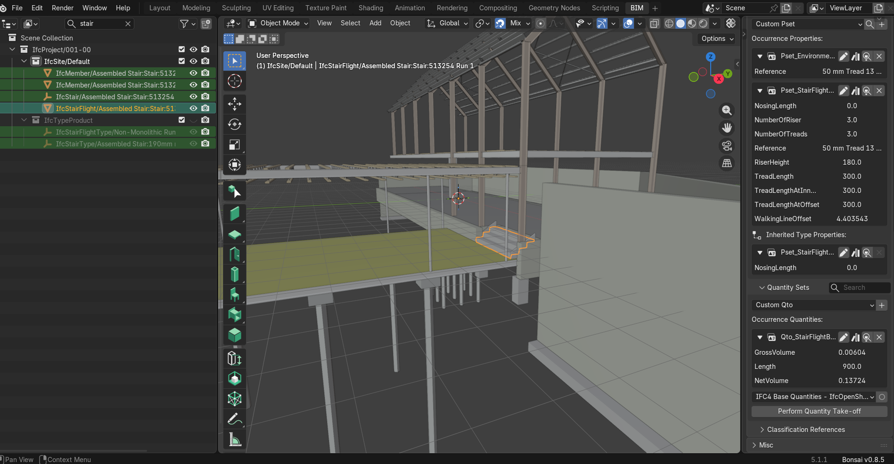
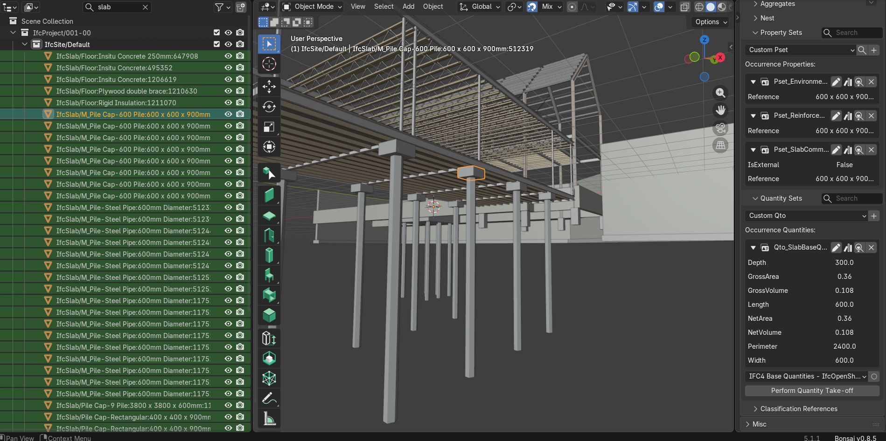
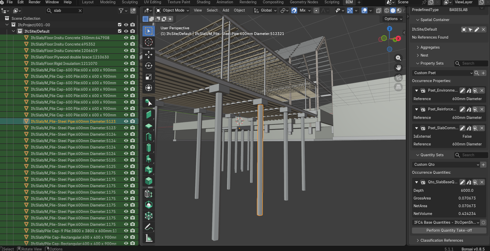
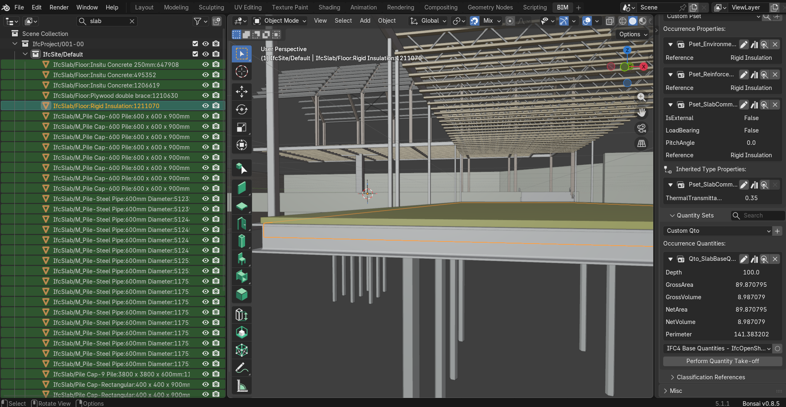
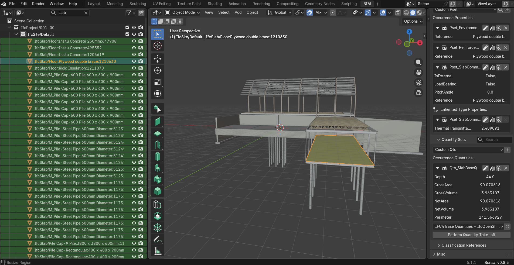
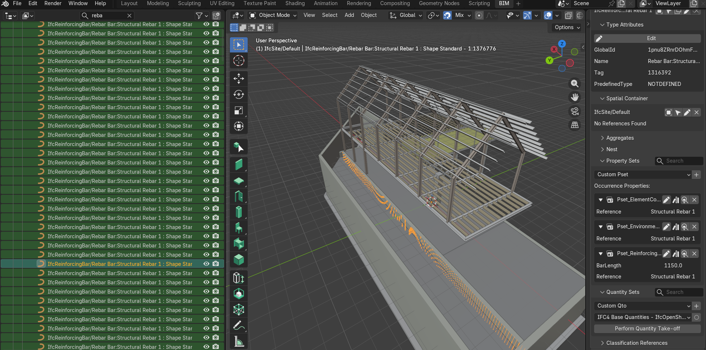
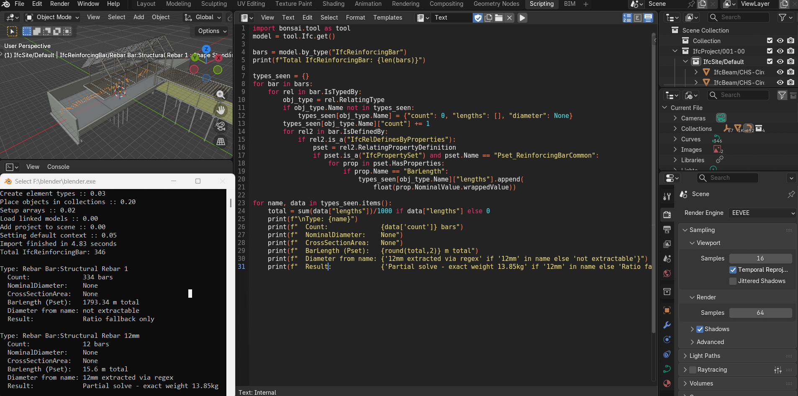

A benchmark model from a software vendor does not guarantee clean or analytically reliable IFC data. It reflects real authoring behavior, export configurations, and schema interpretation under production-like conditions.
SampleStructuralModel.ifc is a publicly distributed Autodesk structural sample model exported from Revit 2025 using IFC4. It represents a mixed structural system consisting primarily of steel framing with secondary concrete elements. The model exported without errors. All quantities were present. Semantic consistency required validation across multiple layers.
- 816 total elements
- 33 concrete structural elements
- 232.1804 m³ total concrete volume
- 346 reinforcing bar elements
- 30 steel columns — excluded
- 70 steel beams — excluded
- 102 light-gauge steel joists — excluded
- 198 timber secondary members — excluded
- 17 steel pipe piles + 15 concrete pile caps — identical IFC class
GrossVolume is expected to be greater than or equal to NetVolume. Here the relationship is inverted — a factor of 22. A workflow relying on GrossVolume would understate stair concrete by approximately 95%.
This indicates export-level inconsistency in Revit 2025 IFC4 stair quantity generation — not a modeling issue. The pipeline prioritizes NetVolume for stair elements due to higher consistency across IFC exports.

32 foundation elements are classified as IfcSlab with PredefinedType BASESLAB — including both 15 concrete pile caps and 17 steel pipe piles. At IFC schema level, both are indistinguishable. Neither carries a material assignment. Separation was achieved using element naming patterns: concrete pile caps included; steel pipe piles (M_Pile-Steel Pipe) excluded.
One pile cap labeled 600 × 600 × 900mm shows name-to-geometry divergence: name indicates 900mm depth, BaseQuantities indicates 300mm. Computed volume confirms 0.6 × 0.6 × 0.3 = 0.108 m³. The pipeline evaluates quantities from IFC geometry, not naming strings.


All five slab elements share PredefinedType FLOOR. Functional classification differs: 3 reinforced concrete slabs, 1 plywood bracing element, 1 rigid insulation element. PredefinedType alone is insufficient for structural classification in mixed-material models. A workflow relying solely on PredefinedType would incorrectly include non-structural elements in every BOQ calculation, cost estimate, and reinforcement assumption that follows.


346 IfcReinforcingBar elements exist across two distinct data states. Type A — 334 elements — NominalDiameter not defined at instance, type, or Pset_ReinforcingBarCommon level. CrossSectionArea absent across all representations. No usable diameter metadata anywhere in the IFC. Ratio-based fallback applied.
Type B — 12 elements, "Structural Rebar 12mm" — diameter inferred from the string 12mm embedded in the type name rather than a structured IFC attribute. No downstream system can recover parameters that are not present in the IFC data structure.


All 33 concrete elements validated against raw IFC quantities in Bonsai/BlenderBIM. All quantities derived directly from IFC BaseQuantities. Zero geometric fallback. Every value traceable to its original IFC source definition.
334 of 346 reinforcing bars contained no usable geometric or parametric data at any level of the IFC. Total steel estimate of 18,545 kg is indicative only — derived from ratio-based assumptions. Not suitable for procurement, fabrication, or contractual pricing.
IFC data rarely fails through absence. It fails through fragmentation and inconsistent semantic representation across multiple layers. The challenge in IFC-based quantity extraction is not computation — it is establishing a reliable hierarchy of trust across inconsistent data sources.
Small authoring decisions in Revit directly affect downstream extraction reliability. Missing parameters or inconsistent family definitions determine whether reinforcement is computed, estimated, or absent entirely. IFC should be treated as structured representation with variable semantic reliability depending on authoring discipline and export configuration.